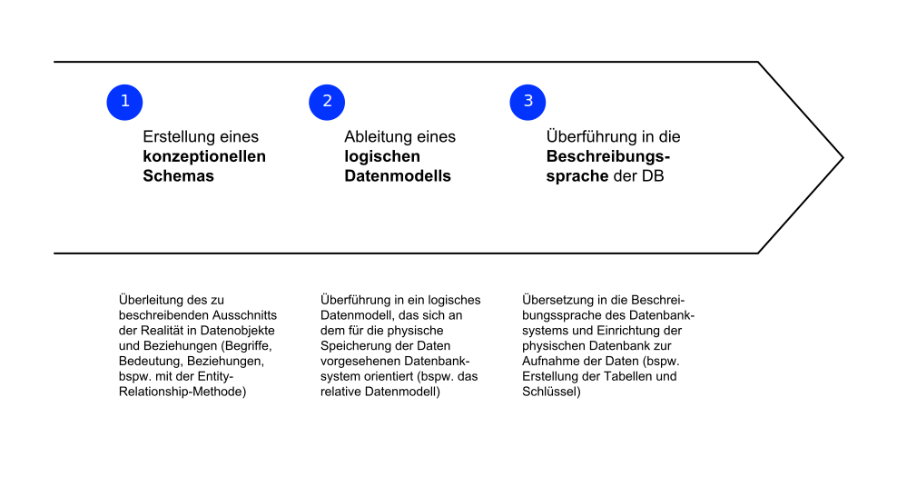
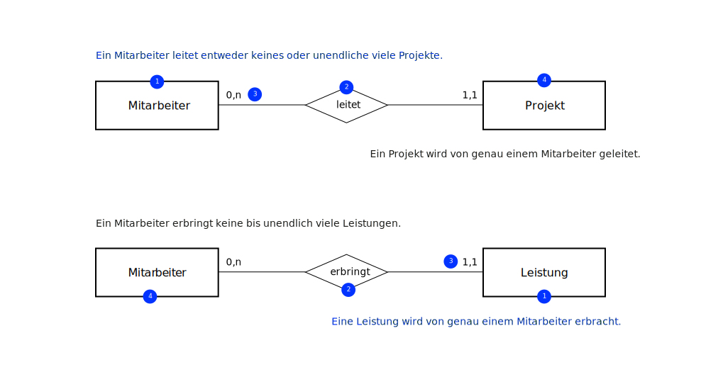

K4 Datenbanken #1
Grundzüge Informationsmanagement (GIM)
Andy Weeger
University of Applied Sciences Neu-Ulm
Motivation
The world’s most valuable resource is no longer oil, but data. Steve Jobs (1997)
Damit Daten Wert haben, müssen möglichst effizient abgelegt, abgerufen, interpretiert und genutzt werden können. In diesem und im folgenden Kapitel lernen Sie die Grundkonzepte hierzu kennen.
Lernergebnisse
Nach dieser Einheit
- können Sie das Konzept der Datenintegration zur Vermeidung von Redundanzen und Inkonsistenzen erläutern,
- können Sie Aufgabe von Datenbanksystemen (DBS) beschreiben,
- können Sie das Vorgehen der Datenmodellierung beschreiben,
- verstehen Sie die Begriffe Entity-Typ, Entity, Attribut, Schlüsselattribut, Relationship und Kardinalität und können diese im Kontext der Datenmodellierung erläutern und
- sind Sie in der Lage, ein einfaches Entity-Relationship-Diagramm (ERM) zu entwerfen und daraus Relationen abzuleiten.
Daten
Begriffsbestimmung
Zweck
Daten beschreiben Objekte der realen Welt durch deren Merkmale und sowie deren Beziehungen zueinander (Mertens u. a. 2016).
Beispiel: Ein Datensatz kann ein Objekt „Artikel“ durch dessen Merkmalen (z. B. Preis, Bezeichnung etc.) und Beziehungen zu anderen Objekten (z. B. Bestellungen, Lieferung) beschreiben.
Klassifizierung
Daten können beispielsweise nach folgenden Kriterien klassifiziert werden:
- Zeichenart bzw. Datentyp: numerische (Ziffern), alphabetische (Buchstaben des Alphabets) und alphanumerische Daten (Ziffern, Buchstaben und Sonderzeichen)
- Erscheinungsform: akustische (z. B. menschliche Laute), bildliche (z. B. Grafiken) und schriftliche Daten (z. B. Texte)
- Formatierung: Formatierte (z. B. formgebundene Tabellen) und unformatierte Daten (z. B. formfreie Texte)
- Verwendungszweck: selten zu verändernde Stammdaten (z. B. Personalstammdaten wie Namen und Adressen) und transaktionsorientierte Bewegungsdaten (z. B. Lagerzu- und –abgänge)
- Stellung im Verarbeitungsprozess: Eingabe- und Ausgabedaten
Datenmanagement
Relevanz
Der Nutzen von Informationssystemen ergibt sich aus der sinnvollen Verarbeitung von Daten, die für bestimmte Aktivitäten bzw. fachliche Funktionen benötigt werden.
Für die Entwicklung, den Betrieb und das Management von Informationssystemen stellen sich insbesondere folgende Fragen:
- Was sind die Daten eines Unternehmens, einer Organisation oder eines privaten Haushalts?
- Wie können diese strukturiert und erfasst werden?
- Wie können diese verarbeitet werden?
- Wie erfolgt deren Speicherung und der wiederholte Abruf bzw. deren Präsentation?
Struktur
Das Management von Daten erfordert eine grundlegende Struktur zur Systematisierung bzw. Hierarchisierung:
- Jeder Datensatz besteht aus einem oder mehreren Datenfeldern,
- die Datenfelder haben für alle Datensätze das gleiche Format,
- die Datenfeldern eines Datensatzes hängen in aller Regel inhaltlich zusammen,
- alle zusammengehörigen Datensätze werden in einer Tabelle zusammengefasst und
- die Datenbank vereint die logisch zusammengehörenden Tabellen.
Problemstellung
In Unternehmen werden Daten oft an unterschiedlichen Stellen gespeichert. Das führt unter anderem zu folgenden Problemen (Laudon, Laudon, und Schoder 2016):
- Datenredundanzen: das mehrfache Vorkommen identischer Datenelemente in verschiedenen Tabellen und/oder Datenbanken (kurz Speicherorten, bspw. dieselben Kundendaten werden in zwei verschiedenen Systemen gespeichert)
- Dateninkonsistenzen: für dasselbe Attribut sind unterschiedliche Werte in Datenelementen gespeichert, die ein reales Objekt repräsentieren (bspw. unterschiedliche Geburtsdaten eines Kunden).
Beispiel

Datenbanksysteme
Datenbanksysteme werden zur Datenorganisation und Datenintegration verwendet und bestehen aus folgenden Komponenten (Laudon, Laudon, und Schoder 2016):
- Datenbank (DB): eine möglichst redundanzfreie Sammlung von Daten, die so strukturiert sind, dass sie von mehreren Benutzern und Anwendungen gleichzeitig und effizient genutzt und flexibel ausgewertet und verknüpft werden können
- Datenbankmanagementsystem (DBMS): System zur Erstellung und Verwaltung von Datenbanken, die von mehreren Anwendungen genutzt werden können. Ein DBMS trennt physische und logische Datenstruktur.
Beispiel
Datenmodellierung
Ziel
Ziel der Datenmodellierung ist die Beschreibung von Unternehmensdaten in einem Datenmodell.
Ein unternehmensweites Datenmodell, bildet die relevanten Objekte aller Bereiche des Unternehmens ab (Krcmar 2015).
Die Datenmodellierung findet vor der Umsetzung bzw. Implementierung von Lösungen zum Management der Daten statt (bspw. Datenbanksysteme).
Vorgehensmodell

Konzeptionelles Modell
Definition
Im konzeptionellen Datenmodell (oder auch konzeptionelles Schema) werden alle inhaltlichen Anforderungen an die Datenbank erfasst. Dies geschieht meist mittels einer grafisch orientierten, formalen Modellierungssprache.
Die am weitesten verbreitete Modellierungssprache ist das Entity Relationship Model (ERM) nach Chen (Bächle, Daurer, und Kolb 2021).
Das Modell unterscheidet Entity-Typen, Attribute und Beziehungen.
Beispiel

ERM
Entity-Typen
Entity-Typen sind reale oder abstrakte Informationsobjekte mit einer eigenständigen Bedeutung wie Rollen (bspw. Kunde), Organisationseinheiten (bspw. Werk), oder reale Objekte (bspw. Artikel) (Bächle, Daurer, und Kolb 2021).
Ein Entity ist eine einzelne, konkrete Ausprägung eines Entity-Typs (bspw. der Kunde Hans Dampf).
Grafisch werden Entity-Typen im Entity-Relationship-Diagramm durch Rechtecke repräsentiert.
Attribute
Anhand von Attributen werden Eigenschaften von Entity-Typen beschrieben.
Ihre konkreten Ausprägungen, die Attributwerte, definieren eine einzelne Entity.
Attribute werden durch Ellipsen, die durch Linien mit den Rechtecken der entsprechenden Entity-Typen verbunden sind, dargestellt.
Attribute, die der eindeutigen Identifikation dienen, sogenannte Schlüsselattribute, werden unterstrichen (Bächle, Daurer, und Kolb 2021).
Beispiel: Anwendung zur Zeiterfassung
Relationen
Über die Relationen (engl. Relationships) werden Beziehungen zwischen Entitiy-Typen beschrieben (Bächle, Daurer, und Kolb 2021).
Relationen werden in Form von Rauten dargestellt und mit Prädikatsverben bezeichnet.
Die Bezeichnungen sollen gewählt werden, dass sie auf alle Entitys der verknüpften Entity-Typen zutreffen.
Beispiel: Anwendung zur Zeiterfassung

Kardinalität
Die Kardinalität bzw. Komplexität der Beziehung spezifiziert die Menge der auftretenden Beziehungen (Bächle, Daurer, und Kolb 2021).
Grundsätzlich lassen sich 1 zu 1 (1:1), 1 zu n (1:n) sowie n zu m (n:m) Beziehungen unterscheiden.
Je nach Notationsart wird die Kardinalität unterschiedlich dargestellt. So unterscheidet sich die Notation nach Chen wesentlich von der (min;max)-Notation.
Beispiel: Anwendung zur Zeiterfassung

(min;max)-Notation
In der (min,max)-Notation werden genaue Unter-und Obergrenzen der zulässigen Anzahl Objekte innerhalb einer Beziehung angegeben. Damit wird festgelegt, dass jede Entität dieses Typs mindestens an min und höchstens an max. Beziehungen des Beziehungstyps teilnimmt.
In der (min,max)-Notation wird die Kardinalität im ER-Modell umgekehrt zu Chen-Notationen positioniert
Beispiel: Anwendung zur Zeiterfassung

✏️ Aufgaben
A1: Grundbegriffe
Erläutern Sie in der Kleingruppe reihum die Bedeutung der folgenden Begriffe.
- Information
- Daten-Redundanz
- Daten-Inkonsistenz
- Datenbanksystem
- Konzeptionelles Datenmodell
- Entity-Typ
A2: Daten oder Information?
Diskutieren Sie, worin sich die drei Beispiele unten unterscheiden und unter welchen Bedingungen es sich um Daten oder Informationen handelt.
A3: DBMS Vorteile
Nennen Sie die Hauptvorteile eines Datenbanksystems.
A4: Online-Shop
Ein Online-Shop verarbeitet Bestellungen von Kunden. Jede Bestellung besteht aus Artikeln. Die Artikel werden von Lieferanten geliefert. Auf der Website können die Artikel je Kategorie angezeigt werden. Ein Artikel kann in mehreren Kategorien erscheinen.
Jeder Kunde hat eine Kundennummer. Zudem werden Name, E-Mail, Bankverbindung und andere Daten gespeichert. Jeder Artikel hat eine Artikel-Nummer, eine Beschreibung, ein Bild und ein Preis. Jede Bestellung hat eine Bestellnummer. Eine Kategorie ist über eine ID und eine Bezeichnung charakterisiert. Ein Lieferant hat in unserem Shop eine Lieferantennummer und einen Namen.
Zeichnen Sie das ER-Modell und prüfen Sie, ob die Beziehungen über die Schlüssel hinreichend abgedeckt sind. Zeichnen Sie sowohl die Kardinalität nach Chen als auch nach der (min;max)-Notation ein.
A5: Auftragsverwaltung
Die Mitarbeiter einer Firma sollen die geleisteten Arbeitsstunden jeden Monat auftragsbezogen erfassen. Ein Auftrag ist in Unteraufträge gegliedert. Die Arbeitsstunden werden den Unteraufträgen zugeordnet. Jeder Mitarbeiter arbeitet an mehreren Unteraufträgen.
Mitarbeiter sind beschrieben durch eine Personalnummer, einen Namen, und einen festgelegten Stundensatz. Jeder Auftrag hat min. die Auftragsnummer, eine Bezeichnung, einen Auftraggeber ein Auftragsdatum. Jeder Unterauftrag ist beschrieben durch eine Unterauftragsnummer, eine Bezeichnung und einen festgelegten Sollaufwand. Eine Leistung besteht min. aus der Leistungsnummer, einer Bezeichnung, dem Monat der Leistungserstellung und den Ist-Stunden.
Entwerfen Sie das ER-Modell. Kennzeichnen Sie außerdem die Primärschlüssel je Entity-Typ und erläutern Sie deren Funktion.